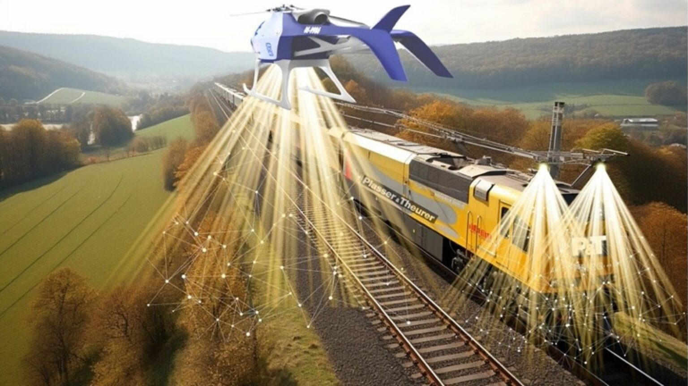
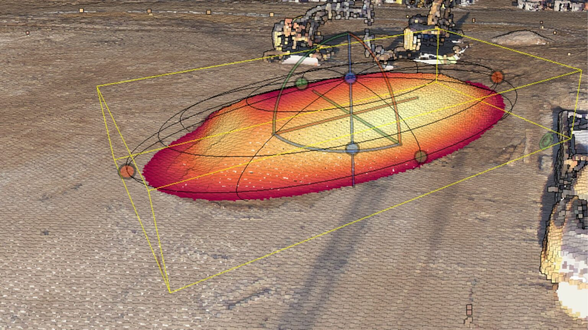
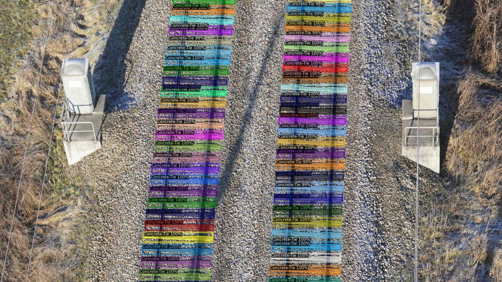
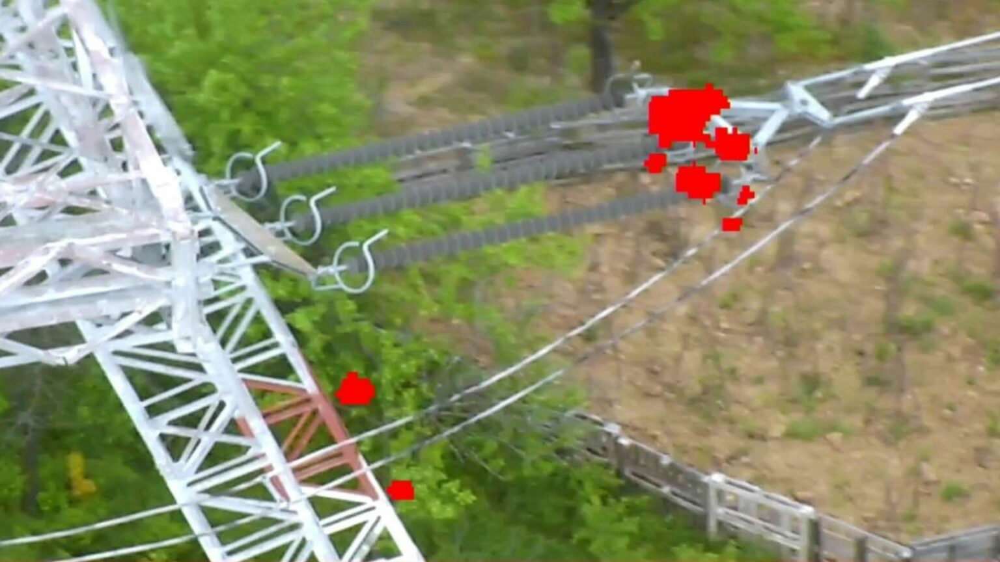
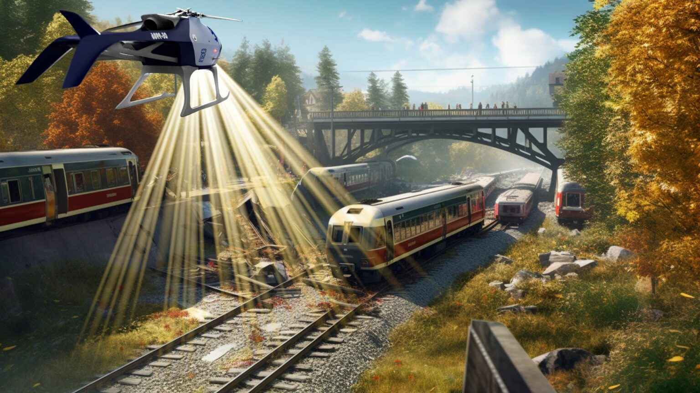

Revolutionising critical infrastructure management through geospatial object detection, autonomous drones, and AI-powered condition monitoring across railway, energy, and roadway sectors.

In the planning phase of new infrastructure paths, SmartDigital conducts in-depth terrain assessments to ensure precision before construction begins.

SmartDigital enables consistent digital cataloging of crucial infrastructure components with AI-driven processing and geospatial coordinates.

Advanced AI-powered monitoring system for proactive infrastructure maintenance, leveraging IoT and unmanned systems to stay ahead of failures.

Drone technology enables rapid situation assessment and real-time decision-making during emergencies — even during nighttime operations.
